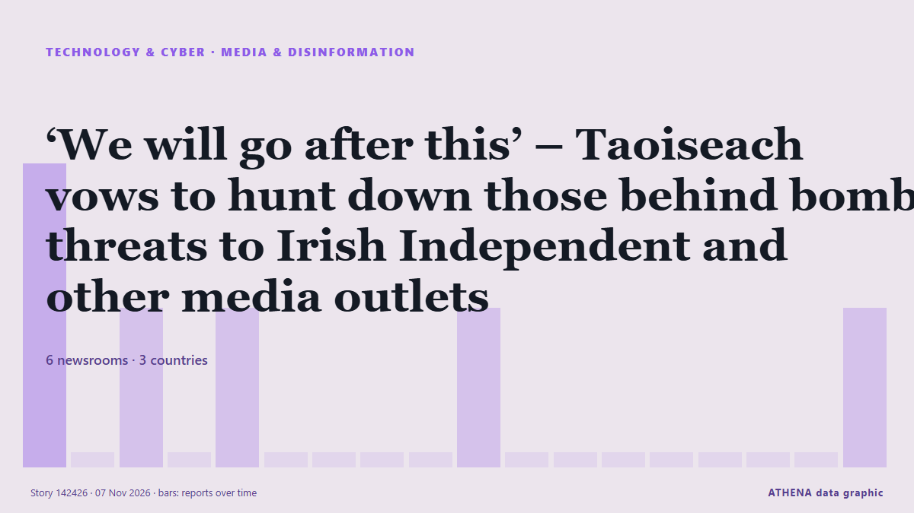

Medien und Desinformation
GesponsertPräsentiert von  Cybernetics and Artificial Intelligence Lab Welcome to the Cybernetics and Artificial Intelligence Laboratory, established at the Department of Business Administration of the National and Kapodistrian University of Athens. The lab is headed by Professor Dimitrios Thomakos. The lab aims to do research that can be published in top venues. Our research uses tools and methods of Artificial Intelligence, and lies in the following areas: - Forecasting - Decision making - Cyber security - Finance We are always looking forward to collaborating with exceptional students!
Cybernetics and Artificial Intelligence Lab Welcome to the Cybernetics and Artificial Intelligence Laboratory, established at the Department of Business Administration of the National and Kapodistrian University of Athens. The lab is headed by Professor Dimitrios Thomakos. The lab aims to do research that can be published in top venues. Our research uses tools and methods of Artificial Intelligence, and lies in the following areas: - Forecasting - Decision making - Cyber security - Finance We are always looking forward to collaborating with exceptional students!
| 25. Okt. | 0 |
|---|---|
| 26. Okt. | 0 |
| 27. Okt. | 0 |
| 28. Okt. | 0 |
| 29. Okt. | 0 |
| 30. Okt. | 0 |
| 31. Okt. | 0 |
| 1. Nov. | 1 |
| 2. Nov. | 1 |
| 3. Nov. | 2 |
| 4. Nov. | 5 |
| 5. Nov. | 9 |
| 6. Nov. | 4 |
| 7. Nov. | 0 |
Schlagzeilen werden auf Englisch angezeigt, wie veröffentlicht.

‘We will go after this’ – Taoiseach vows to hunt down those behind bomb threats to Irish Independent and other media outlets
A threat said that a bomb would detonate on the site within 45 minutes. von Irish Independent
Staff at RTE campus evacuated after bomb threat
It comes after bomb threats were sent to airlines, including an Aer Lingus flight from Dublin, over recent days. von The Irish News (Belfast)
UK broadcaster Sky receives security threat amid wave of bomb scares across Europe
Sky, owned by US media company Comcast, says it is among several media organizations receiving security threats. von Anadolu Agency (English)
Instagram brings Edits to desktop to take on CapCut
The move puts Edits in more direct competition with ByteDance's CapCut, the video-editing app Meta sought to challenge when it launched Edits last year. von TechCrunch
Fate of Japanese ‘journalist’ detained in Russia depends on investigation results — MFA
Maria Zakharova specified that the investigation "is being conducted by the FSB in full compliance with Russian law" von TASS (English)
Ethiopia: Ethiopia Suspends the Reporter Indefinitely in Escalating Assault On Independent Media
[CPJ] Nairobi -- The Committee to Protect Journalists calls on Ethiopian authorities to immediately lift the indefinite suspension of The Reporter, one of the country's oldest independent newspapers. von AllAfrica
World in pictures, November 4, 2026
The best photos from the international wire agencies as chosen by The Age picture editors. von Sydney Morning Herald
Apple spyware alerts reach German MPs and journalists in 99 countries
Germany’s cybersecurity agency has told lawmakers who got Apple’s spyware warnings to treat their iPhones as possibly compromised. von The Next Web
Pan-Africa University unveil media fellowship to reframe Niger Delta reporting
PIND, Pan-Atlantic University initiative seeks to strengthen evidence-based reporting, move beyond conflict narratives. von Premium Times
Army foils TTP infiltration attempt in Kurram, retaliates to 'unprovoked' Afghan firing: state media
Security sources say Afghan Taliban posts suffer heavy damage during Pakistani forces' retaliatory action. von Express Tribune
Disinformation threatens trust in election results: Researcher
Research has shown that disinformation is threatening trust in election results, and not just voter. von SABC News
Israel's detention of Abou Shhadeh 'a campaign to silence'
Israeli forces detained Palestinian journalist Abed Abu Shehadeh over an interview with Azmi Bishara, as threats against Arab political leaders intensified. von The New Arab
Russians launch propaganda Shahed drone to drop leaflets on Kyiv
A Russian propaganda Shahed drone carrying inflammatory leaflets with a phishing QR code has been shot down over Ukraine. von Ukrainska Pravda (English)
Wike defends high Abuja billboard rates, says ‘politics is expensive’
The Minister spoke to journalists during his monthly media chat in Port Harcourt on Thursday, following outcry by several opposition parties over access to communication media through which voters… von Channels TV
Egypt’s head coach Hossam Hassan banned from all broadcast platforms by media council
Egypt’s Supreme Council for Media Regulation (SCMR) has issued a decree banning national football team head coach Hossam Hassan from appearing across all media outlets governed by Press and Media… von Egypt Independent
Saudi Arabia extends $3B financing rollover to Pakistan
Riyadh provided facility to Islamabad in April after UAE withdrew $3.5B financing. von Anadolu Agency (English)
Colleges 'will need £2.5bn to maintain campuses suitable for teaching'
Colleges will need £2.5 billion of investment to deal with its creaking estate. von The Scotsman